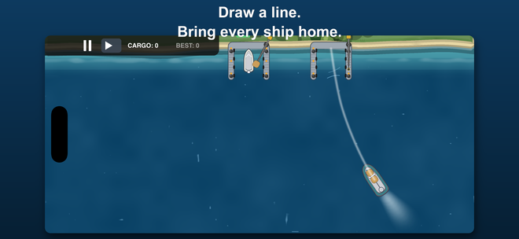
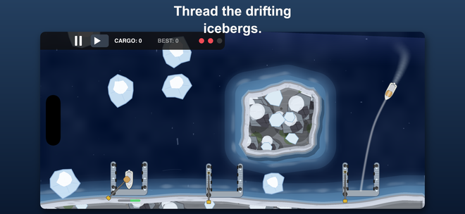
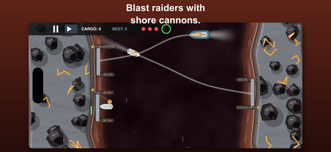

iPhone と iPad に対応
航路を引いて、
船を着ける
Harbor Rush は、ひとつの無理のない操作を軸にした見下ろし型の港湾交通ゲームです。船から岸壁へ線を引く。あとは他の船や障害物がひしめく中を進んでいくのを見守るだけ。



操作はひとつだけ
船から岸壁まで線を引く。操作はこれだけです。あとは、どの船を、いつ動かすかを決めるだけ。
操縦ではなく、線を引く
指一本で航路をなぞって離すだけ。船はその線のとおりに、自分の速さで進みます。そのあいだに次の船へ。
線を交差させない
航路が交わる二隻は、衝突の予告です。どちらかを引き直せば交差は消えます。
積荷を合わせる
船体には色があり、受け入れる岸壁はひとつだけ。色覚に配慮した記号は、色の代わりではなく色の上に重ねてあります。
7つの海域、49の港
北極の氷から火山の海峡まで、どの港も自動生成ではなく手作業で調整されています。固定の地形、固定の障害、そして交通をさばく正解がひとつ——それを見つけるのがこのゲームです。
無料でお試しいただけます。 最初の港は無料で、残りは一度の購入ですべて解放されます。広告もサブスクもありません。
港も黙ってはいません
氷山、機雷、渦潮
氷山が航路を横切って流れ、機雷はちょうど線を引きたい場所にあり、渦潮は船を航路から完全に引き離します。
潮、海流、水門
跳ね橋と閘門は自分の時間割で開きます。海流は、船が着くころには船体を進路から押し流しています。
海賊と沿岸砲
砲撃を受けている港もあります。その最中も、接岸作業は続きます。
同じ配置で誰かと競う
対戦では、両者にまったく同じ港と同じ船が配られます。違うのは、どう捌いたかだけ。リンクか短いコードを送れば始まります——すぐ隣でも、地球の反対側でも。
アカウントも登録も不要です。挑戦状は、普段お使いのアプリで送れる短いコードです。
プレイされる方へ
広告なし。トラッキングなし。アカウント登録なし。 広告も、アプリをまたぐ追跡も、登録も一切ありません。Game Center は任意で、それは Apple のものであり当方のものではありません。利用状況のカウンターは匿名で、お客様と結びつけることはできません——何が送られるかはプライバシーポリシーに正確に書いてあります。購入は一度きりで、自動更新はありません。
対応11言語：日本語、英語、ドイツ語、フランス語、スペイン語、イタリア語、ブラジルポルトガル語、韓国語、ギリシャ語、ウクライナ語、ロシア語。
Harbor Rush
お試しは無料、一度の購入で全解放。iPhone と iPad、11言語、アカウント不要。